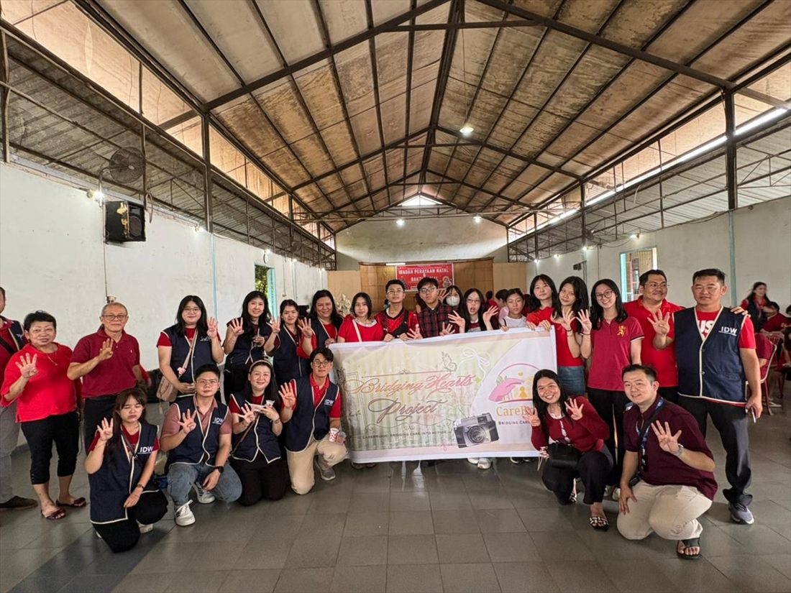
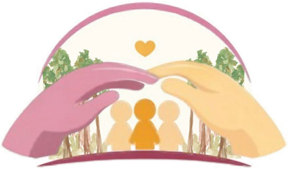
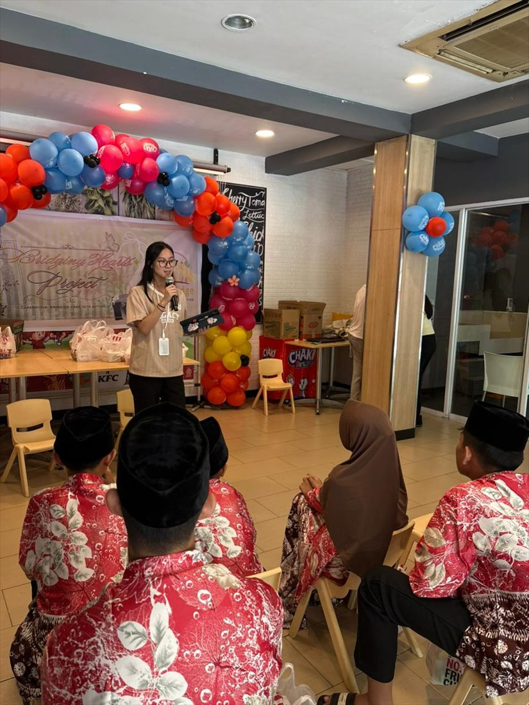
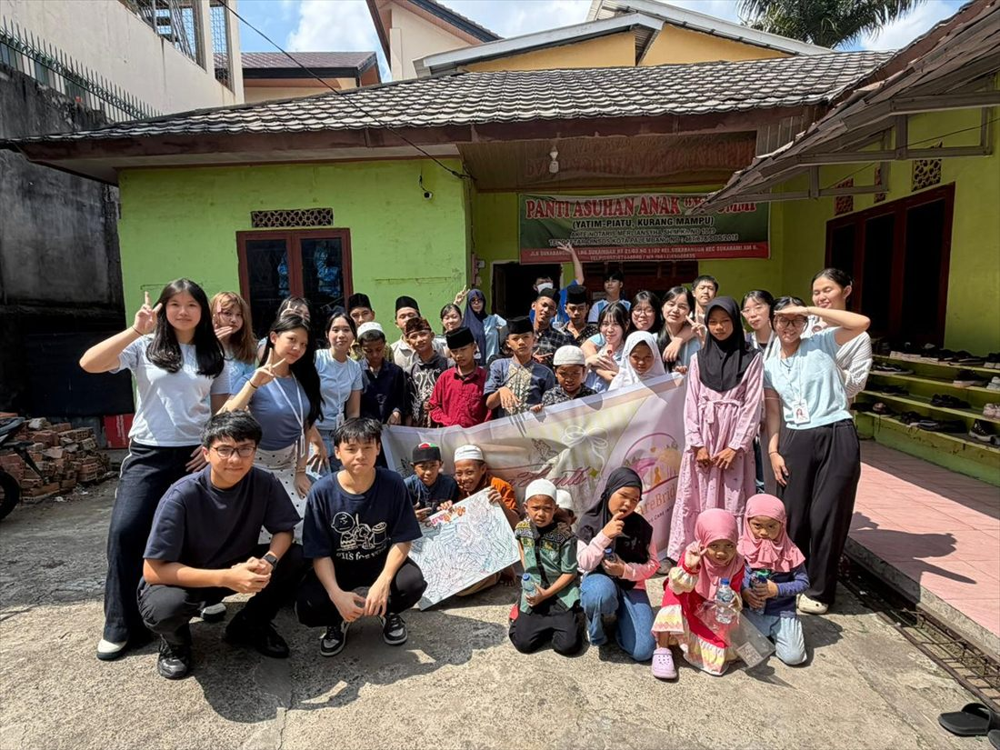
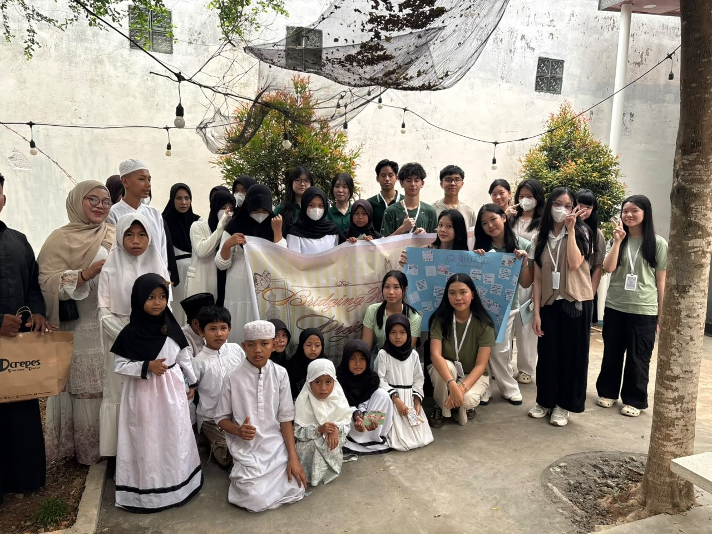
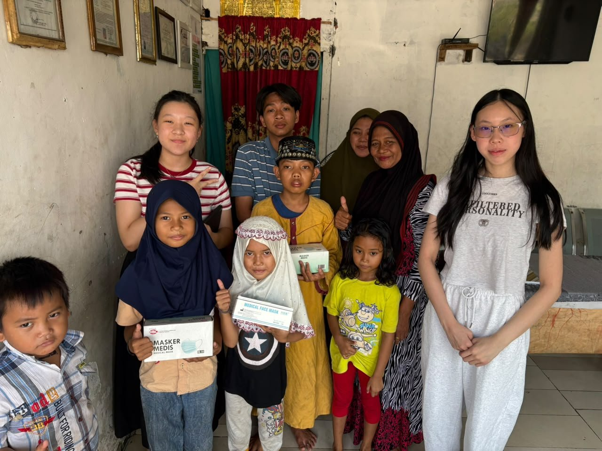
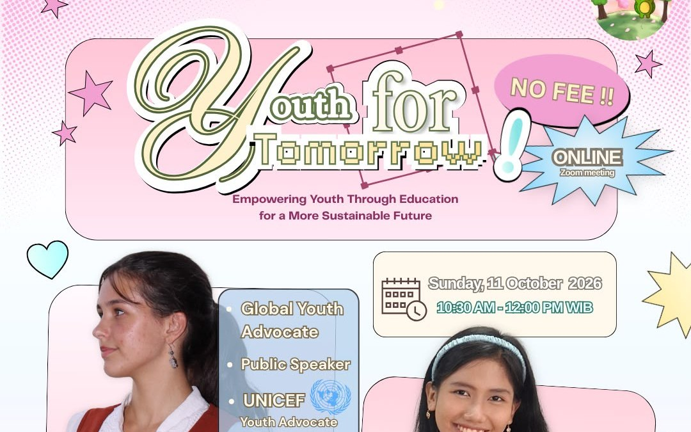
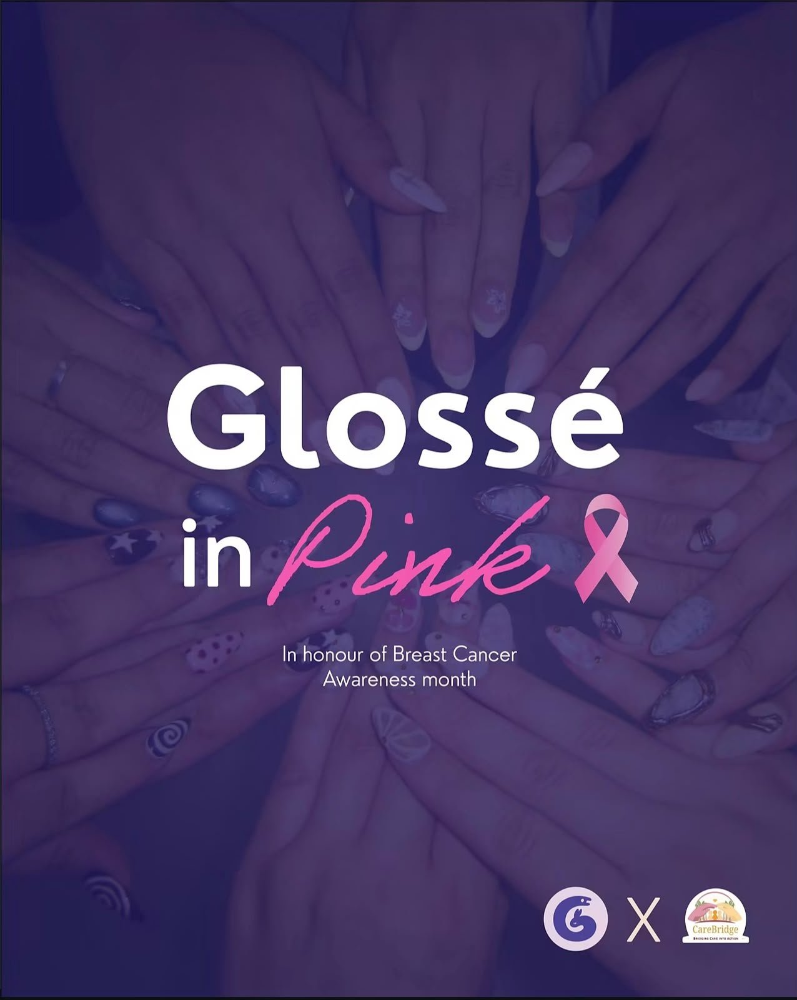

Panti Jompo Sumarah
Bridging Hearts Project #1
Celebrating Lunar New Year with the elderly through shared meals, conversations and festive activities.

CareBridgeEst. 202602 · Our Work
From intention to impact
Flagship Programme
Bridging Hearts Project is CareBridge's flagship programme, and the first step into our work for many of our volunteers. Each edition brings our members into communities where care becomes action, connection becomes impact, and every experience becomes part of what we build together. Explore each edition below!

Celebrating Lunar New Year with the elderly through shared meals, conversations and festive activities.

A day of shared meals, games and moments of connection with the community.

An afternoon centered around art, creativity and self expression through hands on activities.

A wonderful day centered around fun games and engaging English learning activities.
Work that sits alongside the Bridging Hearts Project — campaigns and conversations that reach beyond a single afternoon.

A community initiative responding to Palembang's poor air quality. We distributed 400 masks to 200 people, helping community members protect themselves from the effects of air pollution.

A youth-led webinar in collaboration with Seeds of Hope, featuring Zoya Kalinsky and Jiyhan Kayfa Zahrah, with 500 registrants from 26+ countries coming together to exchange ideas, perspectives, and inspiration for meaningful change.

A campaign in collaboration with Glossé Studios dedicated to raising funds and awareness for Breast Cancer Awareness Month, as well as supporting efforts to promote early detection.
Numbers we can stand behind. This page is updated after every initiative, so the figures below always reflect completed work rather than ambition.
We would rather report one honest number than promise a hundred.